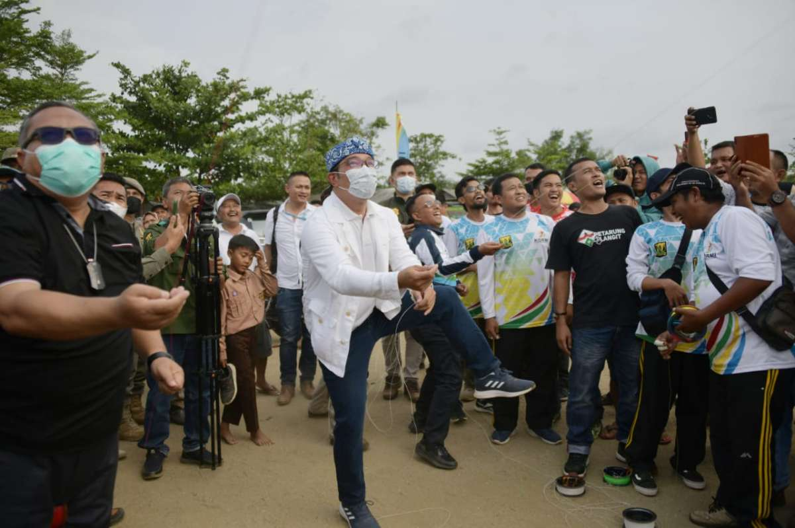

Gubernur Jawa Barat Mochamad Ridwan Kamil mengikuti kegiatan permainan tradisional di tepi Pantai Palangpang, Desa Ciwaru, Kecamatan Ciemas, Kabupaten Sukabumi, Jumat (26/8/2022).Dalam kesempatan tersebut Ridwan Kamil didampingi Bupati Sukabumi Marwan Hamami, menjajal permainan tradisional, salah satunya layangan. Warga pun antuasias menyaksikan orang nomor satu di Jabar bermain layangan. "Ya , ini bagian dari rangkaian kegiatan mempromosikan pariwisata Jawa Barat Selatan, dan Jawa Barat Selatan identik dengan Kabupaten Sukabumi dengan Geopark Ciletuh," kata Gubernur. Perayaan permainan tradisional ini diinisiasi oleh Komite Olahraga Rekreasi Masyarakat Indonesia (KORMI) Jabar. Tujuannya untuk mengenalkan olahraga tradisional sekaligus mempromosikan pariwisata Jawa Barat Selatan lewat pergelaran Pesta Rakyat dan Olahraga Tradisional.
Kegiatan ini juga menjadi rangkaian Cycling de Jabar 2022, ajang pariwisata berbasis olahraga atau sport tourism , yang berlangsung 27-28 Agustus 2022, dengan rute sejauh 320 kilometer. Jelajah sepeda ini dimulai titik start di Pantai Palangpang, hingga finis di Pantai Pangandaran, Kabupaten Pangandaran.
"Kita ada perayaan olahraga rakyat, juga jelajah sepeda nasional dari sini (Geopark Ciletuh) lurus sampai ke arah Pangandaran," ucap Gubernur. Dalam ajang permainan tradisional itu selain layangan juga ditampilkan permainan egrang, tarumpah panjang, panjat pinang, galah asih, dan bola leungeun seuneu. Gubernur juga menyempatkan diri beradu layangan dengan Bupati Sukabumi Marwan Hamami, serta Ketua Umum KORMI Jabar Denda Alamsyah. Pada kesempatan tersebut Gubernur juga meminta semua stakeholders untuk mempromosikan pariwisata Jabar Selatan.
Menurutnya, apabila kegiatan ini berjalan mulus, maka ekonomi masyarakat setempat akan meningkat. "Semua saya ajak datang mempromosikan, sehingga suatu hari tempat ini, infrastrukturnya semakin baik, dan ekonomi masyarakat pun insyaallah meningkat," ungkap Gubernur. "Dulu tempat ini tidak ada penginapan, tapi sekarang "rame". Dulu wilayah ini agak tandus, sekarang sudah lebih hijau. Jadi tahun ke tahun membaik, In Syaa Allah," tambahnya. Dalam kesempatan tersebut Gubernur juga menanam bibit mangrove sebagai salah satu program menghijaukan wilayah Jabar Selatan. Program tersebut dinamakan JUNA (Jumat Menanam). "Jangan sampai kita ini pantainya kering-kering. Tetap harus lestari, dan khusus daerah abrasi, kita ada program menanam jutaan mangrove," pungkasnya. Sementara itu Ketua Umum KORMI Jabar Denda Alamsyah mengatakan, pihaknya akan terus memperkenalkan dan membudayakan permainan tradisional kepada generasi muda (anak-anak), yang saat ini dinilai kurang mengenal.
"Anak-anak kurang terpaku ke permainan, sekarang lebih modern (gawai). Kita coba menarik lagi anak-anak ke permainan tradisional," katanya. Guna meningkatkan ketertarikan akan olahraga tradisional, KORMI setiap tahun rutin mengadakan pertandingan permainan tradisional mulai dari tingkat kota/ kabupaten, provinsi, hingga nasional. "Untuk pengenalan kepada masyarakat, selain pengembangan secara langsung, kita juga berencana menggandeng perusahaan pengembang agar permainan tradisional bisa dimainkan dalam "gadget" ,"ujarnya.
Sumber : https://jabarprov.go.id/berita/ridwan-kamil-promosikan-wisata-jabar-selatan-lewat-permainan-layangan-di-pantai-palangpan-6737